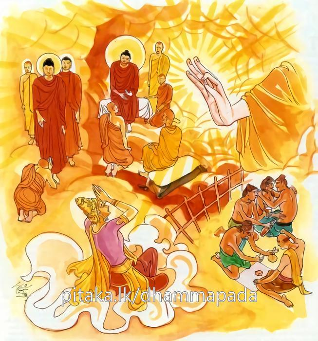
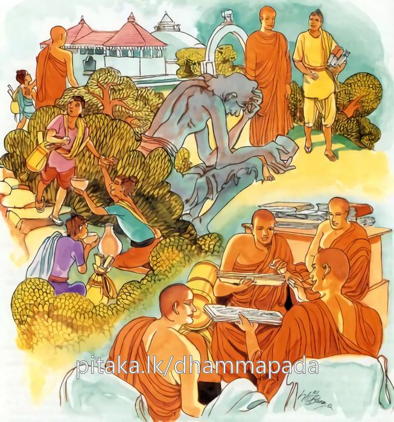
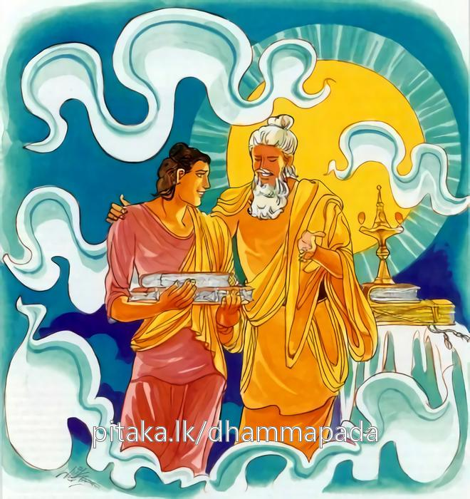

15-8 සක්දෙව්රජ පිළිබඳ කථා පුවත
මෙම කතාව සද්ධර්ම සාගරයෙන් ද කියවන්න.
සාහු දස්සනමරියානං සන්නිවාසො සදා සුඛො
අදස්සනෙන බාලානං නිච්චමෙව සුඛී සියා.
බුද්ධාදි ආර්ය්යයන් (මසැසින් ද නුවණැසින් ද) දැක්ම යහපති. (හුදෙක් දැක්ම පමණක් නොව) ඔවුන් හා එක් තැන විසීම ද (ඔවුන් වැඳ පුදා ගැන්ම ද වතාවත් කැරුම ද) හැම කල්හිම සුව ය. (දෙලෝ වැඩ නොදන්නා) අනුවණයන් නොදැක්මෙන් සතතයෙන් ම සත්ත්ව තෙම සුඛිත වන්නේ ය.

බාලසඞ්ගතචාරීහි දීඝමද්ධාන සොචති
දුක්ඛො බාලෙහි සංවාසො අමිත්තෙනෙව සබ්බදා
ධීරො ච සුඛසංවාසො ඤාතීනං’ව සමාගමො.
එසේ ම ය. බාලයන් හා එක් ව හැවිදිනා සුලු වූයේ දික් කලක් ශෝක කෙරෙයි. (බාලයන් හා යහළු වූයේ නොකටයුත්තෙහි යෙදුනේ වරද කොට මෙ ලොවැ දඬුවමට ද පර ලොව නිරා දුක් ආදියට ද පැමිණ) බොහෝ කලක් සොස්නේ ය. බාලයන් හා එක් වැ විසීම කඩු ගත් අත් ඇති පසමිතුරෙකු හා සමග වාසයක් මෙන් හැම කල්හි ම දුක්ය. නුවණැත්තේ වනාහි ප්රිය නෑයන්ගේ සමාගමයක් මෙන් සුව වූ සහවාසය ඇත්තේ ය.

තස්මාහි,
ධීරඤ්ච පඤ්ඤඤ්ච බහුස්සුතඤ්ච
ධොරය්හසීලං වතවන්තමරියං
තං තාදිසං සප්පුරිසං සුමෙධං
භජෙථ නක්ඛත්තපථ’ව චන්දිමා.
එහෙයින්, ධෘතිසම්පන්නයා ද, ලොවී ලොවුතුරා ප්රඥායෙන් යුක්ත නුවණැත්තා ද, ආගමාධිගමසම්පන්න බහුශ්රැතයා ද, (රහත්පලයට පමුණුවන ප්රතිපත්තිධුරය උසුලන බැවින්) ධුරවහන ශීලයා ද (ශීලව්රත ධුතාංගව්රත වලින් යුත්) ව්රතසම්පන්නයා ද, කෙලෙසුන් කෙරෙන් දුරු වූ ආර්ය්යයා ද යන සුන්දර ප්රඥා ඇති එබඳු වූ ඒ සත්පුරුෂයා නිර්මල ආකාශපථය සෙවුනා සඳුහු මෙන් සෙවුනේ ය.

"සාහු දස්සන" යන මේ ධර්ම දේශනය ශාස්තෲන් වහන්සේ බේලුව ගමේ වැඩ සිටියදී සක්ර දේවේන්ද්රයා නිමිති කරගෙන දේශනා කළහ.
බුදුරජාණන් වහන්සේ ආයු සංස්කාර අත්හැරීමෙන් පසු ලේ පාචනය ඇතිවු බව දැනගෙන සක් දෙරජ ම විසින් බුදුන්වෙත ගොස් ගිලානෝපස්ථානය කිරීම වටීයයි සිතා තුන් ගවු පමණ වූ ආත්මභාවය අත්හැර දමා බුදුන් වෙත එළඹ අත් පා පිරිමැදීය. අනතුරුව බුදුහු මේ කවරෙක් දැයි විමසුහ. ස්වමීනි මම ශක්රදෙවියායි. කුමක් නිසා පැමිණියේද? ඔබවහන්සේ ගිලන්වූ නිසා උවටැන් කිරීමට පැමිණියෙමි. ශක්රය දෙවියන්ට මිනිස් ගඳ යොදුන් සියයක් දක්වා (හමයි) ගෙලබැඳි කුණපයක් ලෙසට මිනිස් ගඳ වෙයි. ඔබ යන්න මට උවටැන් කිරීමට භික්ෂූන් ඇත. ස්වාමීනි මම යොදුන් අසූහතර දහසක් දුර සිටිය දී ඔබවහන්සේගේ සිල් සුවඳ ආස්වාදනය කර ආවේමි. මම ම උවටැන් කරනෙමි. බුදුරජාණන් වහන්සේ ශරීර මළ පහකරන භාජනය අන් අයට අතින් අල්ලන්නටවත් නොදී හිසේ ම තබාගෙන බැහැර කරන්නේ මුහුණ ඇකිලීම් පමණවත් නොකළේ ය. සුවඳ බඳුනක් ගන්නාක් මෙන් විය. සිරුර මළ භාජනය හිසෙන් ගෙන ගොස් බැහැර කළේය. උවටැන් කළේය. බුදුහු ඔහුගේ කථාව අසා මහණෙනි කුමක් කියවු ද මෙය ආශ්චර්යක් නොවේ. ශක්රදේවේන්ද්ර තෙමේ මා කෙරෙහි නො කරයි ද මේ සක් දෙවිඳු මා නිසා මහළු ශක්ර භාවය දුරු කර සෝවාන් වී තරුණ ශක්ර බවට පත්විය. මම ඔහුට මරණ භය තර්ජන ඇතිවුවිට පංචසිඛ ගාන්ධර්ව විද්යාපුත්රයා පෙරටු කොට පැමිණිවිට ඉන්ද්රසාල ගුහාවේදි දෙව් පිරිස් මැද සිටියදී.
"ශක්රය ඔබ කැමති යම් ප්රශ්නයක් වේ නම් පිළිතුරු මගෙන් විමසන්න ඒ ඒ ප්රශ්නවලට මම විසඳුම් දෙන්නෙමි”
මෙලෙස පවසා ඔහුගේ දුක දුරුකරන්නේ ධර්මය දේශනා කළෙමි. දේශනය අවසානයේ දාහතර කෝටියක් ප්රාණීන්ට ධර්මාවබෝධය සිදුවිය. ශක්රයා ද වාඩිවී සිටියදීම සෝවාන් ඵලයට පත් වී තරුණ ශක්රයෙක් විය. මෙලෙස මම ඔහුට බොහෝ උපකාර කළෙමි. එනිසා මා කෙරෙහිය කිරීම අරුමයක් නොවේ. මහණෙනි. ආර්යයාගේ දර්ශනය ද සුවයෙකි. ඔවුන් හා එක් තැනක වාසය කිරීම ද සුවයකි. බාලයන් හා ඇසුර නම් හැමකින්ම දුකකැයි පවසා මේ ගාථා වදාළහ.
දැක අරී සඟ ගණ
උහු හා එක්ව විසුමෙන
බාලයන් දුර ලන
කෙනා සැපයම ලබයි නිතියෙන.
බාලයන් සම ගින්
හැසිරෙන කෙනා නොම ගින්
නෙක කරදර මගින්
විපත් වේමැයි උනට නිසගින්
නැණවතුන් සිත සේ
පිළිවෙත් පුරා මනසේ
අහස මැද සඳසේ
සදා බැබළෙනු මැනව සුවසේ.
සාහුදස්සන මරියානං ආර්යන්ගේ දර්ශනය හා ඔවුන් සමග විසීම හැම කල්හි සුවයකි. බාලයන් නොදැමෙන් ඇසුරු නොකිරීමෙන් සැප ඇත්තෙක් වන්නේය. බාලයා හා එක්ව හැසිරෙන්නා බොහෝ කල් දුකින් ජීවත්වේ. බාලයා හා එක්ව විසීම සතුරන් සමග විසීමක් වේ. නැණවතා සමග සැපවත් සහවාසය ඥාති සමාගමයක් වැන්න.
මේ නිසා ධීරවූ ප්රාඥවූ බොහෝ ඇසුපිරූ තැන් ඇති සීලයෙන් යුත් කෙලෙස් වමාරා දැමු නැණවත් සත්පුරුෂයන් සඳ අහස සේවනය කරන්නාක් මෙන් සේවනය කළ යුතුය.
එහි සාහු - යනු සොඳුරු යහපත් සන්නිවාසො හුදු දැකීම් පමණකි. ඔවුන් සමග එකමතැන වාඩිවීම් ආදී ඔවුන්ට වතාවත් කිරීම, යහපතක්මය බාලසඞ්ගතචාරී යමෙක් බාලයන් හා ඇසුරු කෙරේද දීඝමද්ධානං - යනු යමෙක් බාලයන් හා අත්පා සිඳීම් ආදිය කරමු යයි කීවිට එවැන්නා හා එකට එකතුවී කරත් ද බොහෝකල් දුක්විඳී. සබ්බ - යනු යම් සේ කඩුගත් අතින් හෝ අචිත්ර වු ආශිර්විෂයන් සමග හෝ එකට විසිම නම් එය නිතර දුකට හේතුවේ. ධීරොච සුඛ සංවාසො - මෙහි සුවසේ විසීමනම් එකට එකතු වීමයි. නුවණැත්තන් සමග වාසය සුව ගෙනදේ. සමාගමො - ඥාතීන් හා එකතු විම සුව එළවයි. තස්මාහි යම් හෙයකින් බාලයන් සමග සංවාසය දුකමැයි නුවණැත්තන් හා වාසය සුවය. එහෙයින් උත්සාහවන්ත වේ. ලෞකික ලෝකෝත්තර ප්රඥා සම්පන්න වීමයි. පඤඤාං - අධිගම්ය සම්පන්න වීමයි. බහුස්සුත නම් - අරිහත්වයයි. කෙළෙසුන්ගෙන් දුරුවීම ආර්යත්වය වේ සීලමය වු බර ඉසිලීම ධොරයහ සීලං - සිල්වන්ත බවද, ධූතඞ්ග දැරීම ද, වතවන්තං කලේශය දුරින් දුරු කිරිම අරියං එබඳුවූ සප්පුරිසං නිර්මල වූ ශෝභන ප්රඥාව අහස සඳ ඇසුරු කරන ලෙසට සත්පුරුෂයන් ඇසුරු කරන්න. යන අරුතයි. දෙසුම අවසන බොහෝ දෙන සෝවාන් ආදී ඵලයන්ට පත්වූහ.
සුඛ වර්ග වර්ණනාව නිමියේය.
පසළොස්වැනි වර්ගයයි.